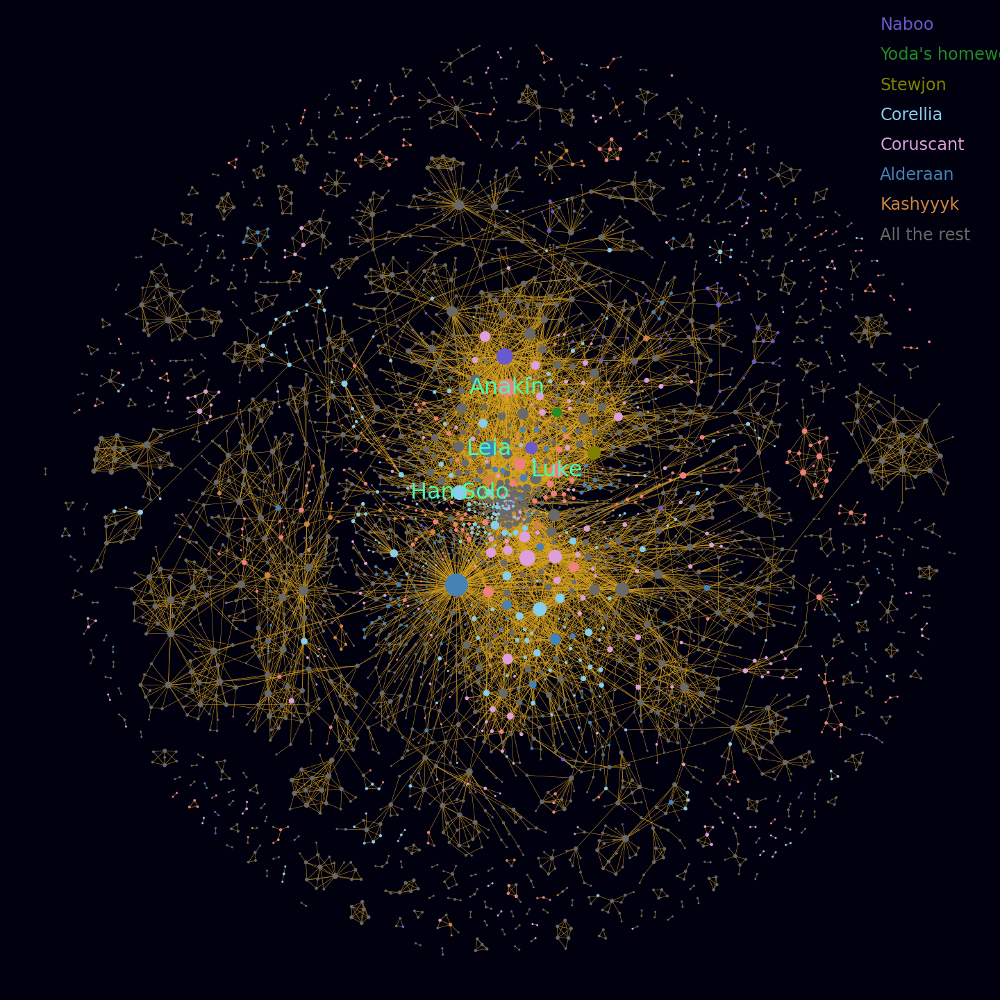
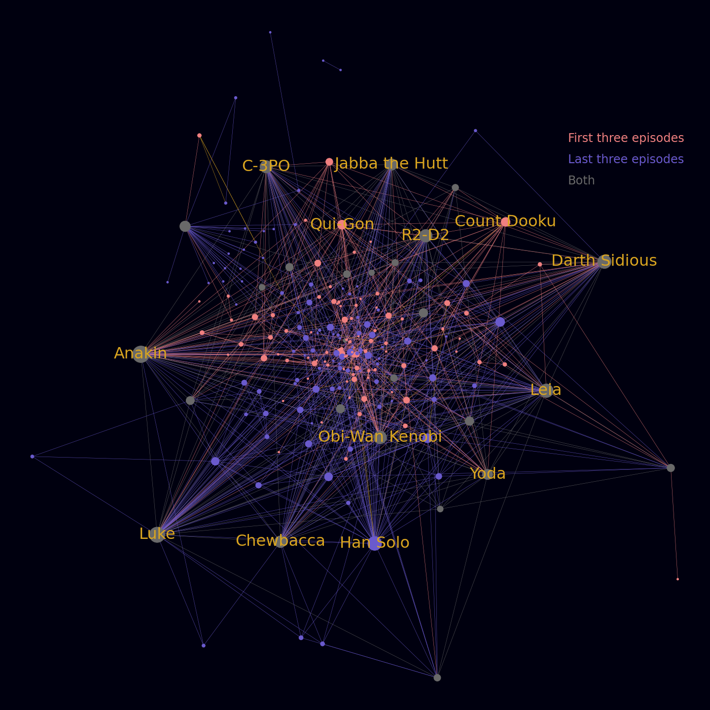
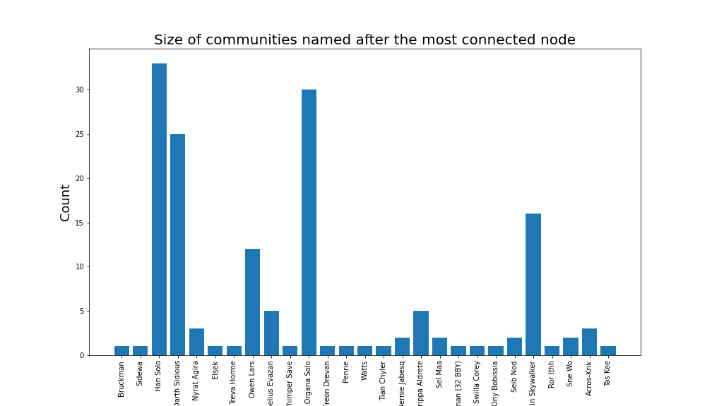
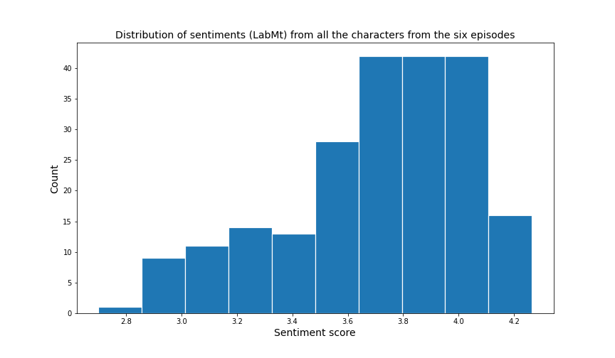
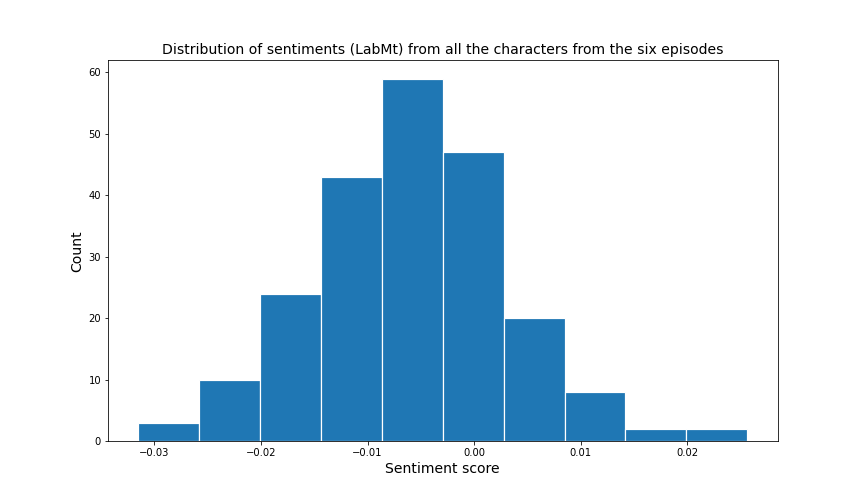

Download the data related to the Wikia from here
The universe of Star Wars has expanded a lot, with not only movies and TV series, but also with a large set of comic books. Having all these information is really hard to comprehend. The first movie came out in 1977 and the universe is expanding up until now, with the first six episodes having the biggest impact. So, we decided to explore Star Wars a little bit more and especially the six episodes and with the help of visualizations and data analysis to understand it better.
Wikia’s Data Source
The first thing we did, was to try to get a better overview about the Star Wars universe. We tried to understand how big it is and the correlation between all these movies and comics. So we extracted the information that was available to us from the Star Wars Wiki data source. As you can see from the graph below, the universe is huge with 449 communities calculated by the Louvain method. There are at least 4001 nodes with 12706 edges between them. It is also really easy to distinguish the two big clusters. Our first thought was that the two clusters would represent the two trilogies (Episodes I, II and III with Episodes IV, V and VI), but actually after a little investigation, we found out that the first cluster represents Episodes I-VI and the other cluster all the events that took place after.

However, even thought both clusters seemed pretty big, the one created by the first six episodes had a much bigger impact and it can be validated from then in and out degree connections
| In Degree Connections | Out Degree Connections | ||
|---|---|---|---|
| Leia Organa Solo | 246 | Darth Caedus | 92 |
| Anakin Skywalker | 147 | Anakin Skywalker | 87 |
| Darth Sidious | 127 | Corran Horn | 81 |
| Leia Skywalker Organa Solo | 104 | Leia Skywalker Organa Solo | 79 |
| Han Solo | 100 | Jaina Solo Fel | 65 |
| Luke Skywalker | 99 | Leia Organa Solo | 62 |
| Darth Caedus | 90 | Tycho Celchu | 56 |
| Mara Jade Skywalker | 80 | Luke Skywalker | 55 |
| Obi-Wan Kenobi | 74 | Obi-Wan Kenobi | 50 |
| Corran Horn | 68 | Ezra Bridger | 50 |
Moreover, from the nodes with the highest degree centrality of the network.
| Character | Degree Centrality |
|---|---|
| Leia Organa Solo | 0.064 |
| Anakin Skywalker | 0.039 |
| Darth Sidious | 0.033 |
| Leia Skywalker Organa Solo | 0.03075 |
| Darth Caedus | 0.03025 |
Leia Organa Solo is a different page in Wikia source, that describes Leia from the new movies and episodes.
Characters Related to the Six Episodes
The next step was to filter out all that chaos and concentrate to the characters that appeared to any of the six episodes, as we wanted to better understand the connections behind our main characters. So we got a completely different network with 218 nodes, 1128 edges between them and 27 communities in total.

Furthermore, the results from the degree connections and centrality, validate the results, without giving any significant informations.
| In Degree Connections | Out Degree Connections | ||
|---|---|---|---|
| Anakin Skywalker | 71 | Anakin Skywalker | 50 |
| Luke Skywalker | 64 | Luke Skywalker | 39 |
| Han Solo | 51 | Leia Skywalker Organa Solo | 31 |
| Darth Sidious | 46 | Obi-Wan Kenobi | 29 |
| Leia Skywalker Organa Solo | 45 | R2-D2 | 28 |
By eliminating all the characters outside the first six episodes, it is obvious that Han Solo seems a more important character with Darth Sidious becoming less popular. Also, the absence of Obi-Wan and Yoda is worth mentioning, as they appear to be characters with a big influence in the movies.
| Character | Degree Centrality |
|---|---|
| Anakin Skywalker | 0.35023 |
| Luke Skywalker | 0.29953 |
| Han Solo | 0.24423 |
| Leia Skywalker Organa Solo | 0.23502 |
| Darth Sidious | 0.23041 |
Communities
Then we explored the communities a little bit further and created a barplot with the size of every community named after the most connected node.

The results were as expected with many unknown characters creating a solely community and our main protagonists creating some big ones.
Sentiment Analysis
The last task that we explored regarding the information we extracted from the Wiki data source was a sentiment analysis of everyone’s Wiki page. As there were many nodes and many of them represented many unknown characters we decided to remove nodes with a in-degree less than 10 so we could extract the most happiest and saddest characters from a more important batch of choices. We used the LabMT and Vader method to calculate these information from our characters.
| Happiest Character | LabMT | Saddest Character | LabMT |
|---|---|---|---|
| J’Quille | 4.1445 | Anakin Skywalker | 2.7013 |
| Shmi Skywalker Lars | 4.073 | Darth Sidious | 2.9862 |
| Beru Whitesun Lars | 4.0614 | Leia Skywalker Organa Solo | 3.0067 |
| Greedo | 3.9984 | Han Solo | 3.0729 |
| Carlist Rieekan | 3.9862 | Obi-Wan Kenobi | 3.0770 |
The results using the LabMT method were both expected and shocking with Anakin Skywalker (which is also Darth Vader in the wiki source) to have the first place in the saddest characters and Darth Sidious the second one. Many characters that hadn’t to do anything with the war had the highest places in the happiest section. However, many main protagonists which were considered good had hish places in the saddest section.
| Happiest Character | VADER | Saddest Character | VADER |
|---|---|---|---|
| Carlist Rieekan | 0.008753 | Cornelius Evazan | -0.0134107 |
| Maz Kanata | 0.004962 | Greedo | -0.013154 |
| Nien Nunb | 0.003551 | Norra Wexley | -0.012571 |
| Wedge Antilles | 0.001353 | Dooku | -0.011735 |
| Shmi Skywalker Lars | 0.000148 | Dengar | -0.011194 |
The results regarding the VADER method seemed quite different, especially regarding the saddest characters where Greedo is the second most sad character in the VADER method, while being one of the happiest in the LabMT.
Finally we computed the distribution of the sentiment analysis for all the characters regarding the six episodes, with the mean value both to LabMT and VADER being quite low.
| LabMT Distribution | VADER Distribution |
|---|---|
|  |  |